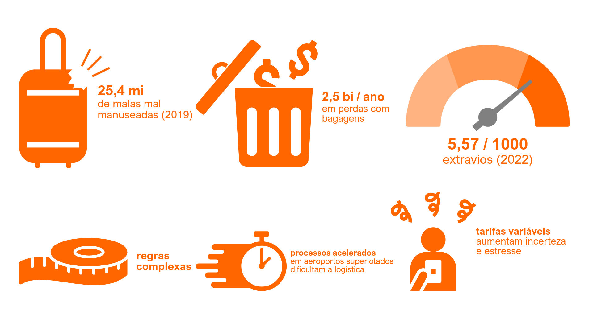
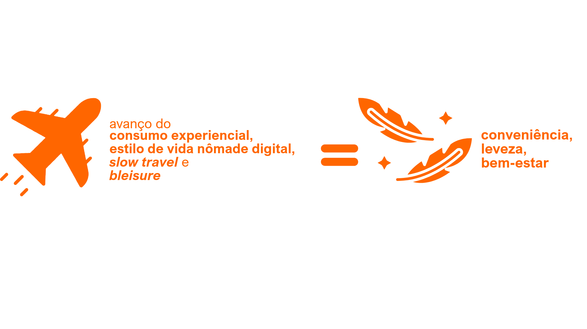
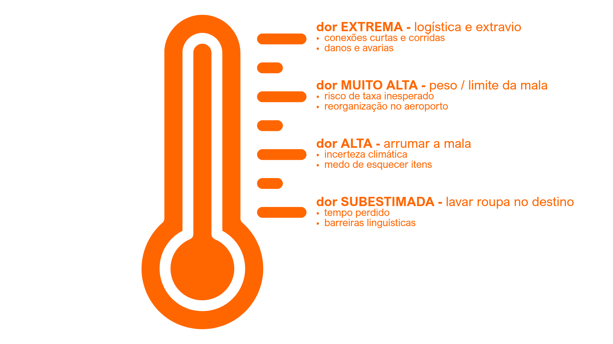

Visão Geral
A LIBERÔ nasceu a partir da observação de que viajar, apesar de ser associado a liberdade e bem-estar, frequentemente se transforma em uma experiência marcada por peso, incerteza e ansiedade. Ao longo da pesquisa, o problema deixou de ser entendido como uma questão puramente logística e passou a ser enquadrado como uma dor de experiência: quanto maior a dependência da mala, maior o desgaste emocional do viajante.
Contexto e problema
Viajar nunca esteve tão acessível, mas a experiência do viajante se tornou mais complexa. Na investigação inicial, identifiquei que boa parte dessa complexidade se concentra em uma etapa específica da jornada: a bagagem. Mais do que transportar objetos, ela concentra decisões, riscos, custos extras, desgaste físico e ansiedade antes, durante e depois da viagem.

Ao mesmo tempo, mudanças culturais e comportamentais reforçaram novas expectativas: Millennials e Gen Z valorizam conveniência, leveza, bem-estar, sustentabilidade e um uso mais consciente do tempo.

Nesse contexto, o projeto passou a investigar uma pergunta central:
Se o problema não é apenas a mala, mas o peso físico e emocional que ela representa, como projetar uma experiência de viagem realmente leve?
Diagnóstico
Para estruturar o problema, combinei pesquisa exploratória, análise de tendências, construção de cenário, entrevistas qualitativas, personas, jornada do usuário, benchmarking, SWOT e Value Proposition Canvas. Esse conjunto mostrou que o incômodo com a bagagem não é isolado: ele reflete uma mentalidade que prioriza experiência sobre posse, consumo consciente, fluidez e leveza emocional.
A leitura do cenário apontou dois grupos com forte aderência ao problema: jovens viajantes conscientes, especialmente Millennials e Gen Z, e profissionais em viagem ou nômades digitais. Em comum, eles valorizam praticidade, previsibilidade, controle financeiro e redução de esforço.
Conflito central
O conflito do projeto não estava em “como organizar melhor uma mala”, mas em algo mais profundo: viajar pede liberdade, enquanto a lógica da bagagem impõe peso, antecipação excessiva, medo de extravio, risco de taxas e decisões difíceis demais para uma experiência que deveria ser leve.
As entrevistas reforçaram essa tensão com clareza. Mesmo usando listas, organizadores, balanças e planejamento antecipado, os participantes relataram que a mala acompanha emocionalmente o viajante antes, durante e depois da viagem. Uma frase sintetizou esse padrão:
“Eu queria aproveitar a viagem, não me preocupar e cuidar da mala.”
A partir daí, o projeto virou a chave: a dor não é só logística; a dor também é emocional.
